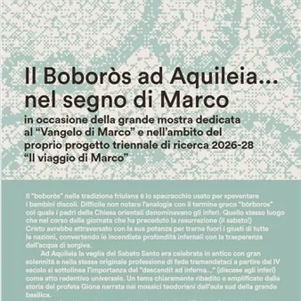

sab 21 nov
Il Boboròs ad Aquileia… nel segno di Marco
Una giornata di eventi nel territorio della capitale culturale del Friuli, in occasione della grande mostra dedicata al “Vangelo di Marco”. Per un’immersione originale nella storia e nelle eccellenze del territorio. PROGRAMMA: ore 16:30 Palazzo Meizlik (via Patriarca Popone)…
 Indicazioni
Indicazioni
- Costi e prenotazioni
- Costo non indicato · Prenotazione non indicata
- Programma
- Programma da verificare. Apri la fonte ufficiale per orari e possibili aggiornamenti.
- In caso di maltempo
- Nessuna indicazione specifica pubblicata.
- Note
- Acquisito automaticamente dalla fonte.
L’EVENTO
Descrizione completa
Il “ boboròs ” nella tradizione friulana è lo spauracchio usato per spaventare i bambini discoli. Difficile non notare l’analogia con il termine greco “ bòrboros ” col quale i padri della Chiesa orientali denominavano gli inferi. Quello stesso luogo che nel corso della giornata che ha preceduto la resurrezione (il sabato!) Cristo avrebbe attraversato con la sua potenza per trarne fuori i giusti di tutte le nazioni, convertendo le incendiate profondità infernali con la trasparenza dell’acqua di sorgiva.
Ad Aquileia la veglia del Sabato Santo era celebrata in antico con gran solennità e nella stessa originale professione di fede tramandataci a partire dal IV secolo si sottolinea l’importanza del “descendit ad inferna...” (discese agli inferi) come atto redentivo universale. Un tema chiaramente ribadito e amplificato dalla storia del profeta Giona narrata nei mosaici teodoriani dell’aula sud della grande basilica.
A partire da questa suggestione, l’associazione “Boboròs” – costituita con l’obiettivo di valorizzare le ricerche di don Gilberto Pressacco sulle origini marciane e alessandrine della Chiesa aquileiese – promuove, in stretta sinergia con il Comune e la Fondazione Aquileia, una giornata di eventi nel territorio della capitale culturale del Friuli, in occasione della grande mostra dedicata al “Vangelo di Marco”. Per un’immersione originale nella storia e nelle eccellenze del territorio.
PROGRAMMA:
ore 16:30
Palazzo Meizlik (via Patriarca Popone)
Visita guidata della mostra “Il Vangelo di Marco”
a cura della Fondazione Aquileia
Prenotazione obbligatoria (con biglietto acquistato a parte) a numero chiuso (max 25 persone). Telefonare al 0431-917619
È possibile capire qualcosa di Aquileia senza vedere dal vivo il suo patrimonio e senza farselo raccontare da chi l’ha studiato e continua a dedicare il suo tempo ad approfondirlo e divulgarlo? Una preziosa visita guidata, un’occasione per entrare con competenza e piacere dentro il mistero della storia.
ore 18:00
Sala d’onore Fondazione Aquileia (via Roma, 20)
“Le dune su cui San Marco approdò ad Aquileia? Aspetti geologici e paleo ambientali”
Conferenza con i geologi Alessandro Fontana (Università di Padova) ed Emanuele Forte (Università di Trieste)
Introduce Luca De Clara (associazione Boboròs)
Modera Cristiano Tiussi
Più si affonda nelle pieghe del primo cristianesimo aquileiese più la nebbia s’infittisce. Per lo storico i punti fermi sono pochi e piuttosto inclini alla mobilità! Che cosa possiamo dire di certo ed incontrovertibile a proposito della penetrazione della fede cristiana nelle terre di Aquileia? San Marco è davvero sbarcato ad Aquileia con il suo tesoro di fede? E se sì, dove di preciso potrebbe essere approdato?
Quella “duna di San Marco” a Belvedere che storia racconta? Proviamo a chiederlo al geologo. Anzi, ai geologi!
ore 20:00
Ristorante “Patriarchi” (via Giulia Augusta, 12)
“Il gusto e la storia. A cena con... San Marco”
La cucina dell’impero e le sue contaminazioni
Intervento di Roberto Zottar, Accademia Italiana della Cucina
Prenotazione obbligatoria. Telefonare al 0431-91036
Un ristorante che propone un affondo intrigante nella cucina degli antichi romani: un viaggio attraverso il gusto e le suggestioni che sollecitano la vista, le emozioni e… il palato. Con un narratore d’eccezione.
IL PROGRAMMA
Programma e orari
Appuntamenti raccolti dalle fonti elencate. Dove manca un orario, non è ancora disponibile in questa scheda.
Programma pubblicato
- ore 16:30
- ore 18:00
- ore 20:00
INFORMAZIONI UTILI
Prima di partire
- Controllare la fonte prima di partire.
ORGANIZZAZIONE